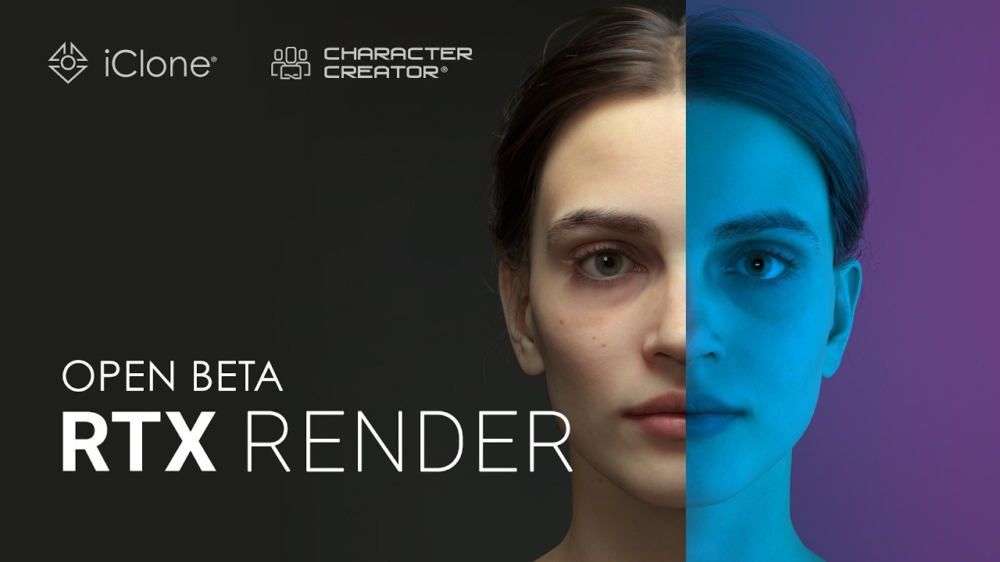

3D 資產製作：RTX Rende…open beta 的製作重點
這次更新聚焦 Path Tracing（RTX Rende…open beta），涉及 Path Tracing。對 角色製作 而言，重點是新增能力實際介入 authoring、資產交換或輸出的哪一段，以及升版後是否會改變既有設定與相容性。

角色製作 ★★★☆☆
完整分析
技術／流程變更
更新內容集中在 Path Tracing（RTX Rende…open beta），並牽涉 Path Tracing。這類變更要先釐清新增能力位於 authoring、資產交換還是輸出端，因為同樣叫「新功能」，對美術工作量與既有專案的影響可能完全不同。
Production 影響
在 角色製作 流程裡，可用同一份代表性資產做升版前後對照：記錄操作步驟、手動修正次數、輸出一致性與相容性，確認 Path Tracing（RTX Rende…open beta） 是否真的降低成本，或只是增加另一套設定。
導入測試與限制
目前資訊能確認 Path Tracing（RTX Rende…open beta） 的功能方向，但不能直接推定大型專案的穩定性、效能或插件相容性；若會改動既有資料格式或版本依賴，導入前仍需做舊檔與回退測試。
BRIEF｜來源已驗證；證據深度較有限，完整分析會明確區分已知資訊與待驗證事項。